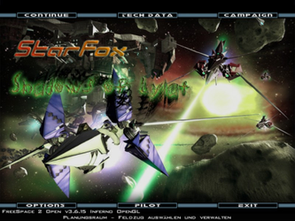

Konfiguration
Dieser Artikel wurde für die folgenden Ubuntu-Versionen getestet:
Dieser Artikel ist größtenteils für alle Ubuntu-Versionen gültig.
Zum Verständnis dieses Artikels sind folgende Seiten hilfreich:
Installation von Programmen, optional
Archive entpacken, optional
Dieser Artikel beschäftigt sich mit der Konfiguration des Spiels Freespace 2 und ist übertragbar auf die Total Conversions Diaspora und The Babylon Project.
|  |
Mod: Shadows of Lylat  |
Erweiterungen¶
Installation¶
Die Installation gestaltet sich einfach: Möchte man die Erweiterung installieren, wird in dem Freespace 2 Verzeichnis ein neuer Ordner mit dem Namen des Mods bzw. der Kampagne erstellt in dem die benötigten Dateien hineinkopiert werden. Alternativ kann dies im Ordner ~./fs2_open im jeweiligen Homeverzeichnis erfolgen.
In jedem Fall müssen die Rechte der hinzugefügten Dateien angepasst werden:
find ~/Spiele/Freespace2/ -type d -exec chmod a+rx '{}' \;
find ~/Spiele/Freespace2 -type f -exec chmod a+r '{}' \;
find ~/.fs2open/ -type d -exec chmod a+rx '{}' \;
find ~/.fs2open/ -type f -exec chmod a+r '{}' \; Starten¶
Mods, Kampagnen und sonstige Erweiterungen können mit der Option -mod <Mod-Ordnername> gestartet werden. Dieses Beispiel startet die Hauptkampagne von Freespace 2 mit den grafischen Verbesserungen [1]:
cd ~/Spiele/Freespace2/ ./fs2_open_VERSIONSNUMMER
Damit auch andere Erweiterungen auf die grafischen Verbesserungen des Hauptspiels zugreifen können, sollte der Ordner mediavps immer mitgeladen werden. Außerdem können Mods und Kampagnen wiederum auf andere Erweiterungen zugreifen. Dazu müssen alle benötigten Elemente in der "mod-Option" aufgelistet und mit Komma getrennt werden.
Beispiel¶
Das aus zwei Minikampagnen bestehende Shivans - das in einen gleichnamigen Ordner kopiert wird - benötigt den Freespace 1 Port (Ordnername in diesem Beispiel: Fs1_Port_3) und die grafischen Verbesserungen des Hauptspiels zusammen mit "Lightspeed's nebulae" (alternative Hintergrundnebel), die sich in dem Ordner mediavps befinden. Möchte man diese Kampagnen spielen, startet man Freespace 2 folgendermaßen [1]:
cd ~/Spiele/Freespace2/ ./fs2_open_VERSIONSNUMMER -mod Shivans,Fs1_Port_3,mediavps
Dabei gilt die Faustregel:
Als erstes den Mod oder die Kampagne, die gespielt werden soll und als letztes die Verbesserungen des Hauptspiels (also mediavps) laden!
Zusätzliche Grafiken oder Animationen¶
Neben den offiziellen Paketen gibt es noch eine Vielzahl zusätzlicher Grafiken (besonders oft wird auf "Lightspeed's nebulae"  zurückgegriffen) und verbesserter Schiffsmodelle . Wiederum abhäng davon, ob diese Zusätze allen oder nur einem einzelnen Benutzer zur Verfügung stehen sollen, kopiert man sie entweder im Freespace 2 Verzeichnis in den Ordner mediavps oder ins Homeverzeichnis unter .fs2_open/mediavps (ggf. erstellen!).
zurückgegriffen) und verbesserter Schiffsmodelle . Wiederum abhäng davon, ob diese Zusätze allen oder nur einem einzelnen Benutzer zur Verfügung stehen sollen, kopiert man sie entweder im Freespace 2 Verzeichnis in den Ordner mediavps oder ins Homeverzeichnis unter .fs2_open/mediavps (ggf. erstellen!).
Hier eine Liste, welche Dateien wohin gehören. Nicht vorhandene Ordner kann man einfach erstellen:
| Dateipfade | |
| Dateiendung | Ordner |
| *.vp | mediavps - Nur wenn es sich nicht um Dateien für Mods oder Kampagnen handelt! |
| *.ibx | mediavps/data/cache |
| *.pcx, *.dds, *.tga und *.eff | mediavps/data/maps |
| *.pof | mediavps/data/models |
| *.fs2 | mediavps/data/missions |
| *.tbm | mediavps/data/tables |
Hinweis:
Die Zusätze können genauso wie die anderen Erweiterungen auch in einen neuen Ordner statt in mediavps kopiert werden. Bei sehr umfangreichen Zusätzen kann das sinnvoll sein, allerdings ist die empfohlene Methode übersichtlicher, weil die "mod-Option" nicht angepasst werden muss.
Grafikeinstellungen¶
Allgemein muss man festhalten, dass die Hardwareanfoderungen von Freespace 2 eine sehr große Spannweite haben. Verzichtet man auf alle grafischen Verbesserungen in Form von neu hinzugekommenen Grafiken oder Effekten, spielt man quasi das "Urspiel", das auch noch auf alten Rechnern von 1998 läuft. Im umgekehrten Fall, wenn man also möglichst alles versucht aus dem Spiel rauszuholen, können selbst moderne High-End-Rechner ins Schwitzen kommen. Da es sich zudem um ein Open-Source-Spiel handelt, wird die Grafik immer weiter verbessert, wodurch sich auch wieder die Anforderungen an die Hardware nach oben schrauben können. Im Einzelfall heißt das, dass man ein wenig herumexperimentieren sollte, um die ideale Konfiguration für seinen Rechner zu finden.
Startoptionen¶
Die Optionen, mit denen Freespace 2 immer gestartet werden soll, müssen in die Datei cmdline_fso.cfg geschrieben werden. Sollen diese Einstellungen für alle Benutzter gelten, öffnet oder erstellt man diese Datei mit einem Editor [2] in dem Freespace 2 Verzeichnis in dem Unterordner data, ansonsten in seinem Homeverzeichnis unter .fs2_open/data.
| Startoptionen | |
| Parameter | Beschreibung |
-window | Fenstermodus |
-nograb | Mauszeiger wird nicht "gefangen". |
-nosound | Soundausgabe deaktiviert. |
-nomusic | Keine Verwendung von Musik. |
--help | Anzeige weiterer Parameter. |
Eine genaue Liste mit allen Optionen und Beschreibung gibt es hier .
Die Zusammenstellung der Optionen sollte von der Geschwindigkeit des verwendeten Rechners abhängig gemacht werden. Allgemein empfiehlt sich darüber hinaus, bei entsprechender Rechner-Leistung über das Konfigurationspogramm seines Grafikkartenherstellers Antialiasing zu aktivieren, da die Optik dadurch stark verbessert wird.
Für Mittelklasse-Rechner empfiehlt sich folgende Zusammenstellung:
-spec -glow -mipmap -missile_lighting -dualscanlines -targetinfo -rearm_timer -ballistic_gauge -3dwarp -warp_flash -snd_preload -env -img2dds
Nennt man einen modernen High-End-Rechner sein Eigen, kann man diese ausprobieren:
-spec -glow -env -mipmap -3dshockwave -noscalevid -missile_lighting -cache_bitmaps -dualscanlines -targetinfo -orbradar -rearm_timer -3dwarp -warp_flash -weapon_choice_3d -ship_choice_3d -snd_preload -ambient_factor 35 -no_emissive_light -spec_exp 16.7 -spec_point 0.6 -spec_static 0.9 -spec_tube 1
Die Optionen nach -snd_preload legen fest, wie sich die Beleuchtung im Spiel verhalten soll. Sie können je nach Geschmack durch eine dieser Vorlagen ersetzt werden. Es kann aber auch durchaus mit den jeweiligen Werten der einzelnen Optionen experimentiert werden, um das Lichtverhalten den eigenen Bedürfnissen anzupassen.
Optionen, die nicht bei jedem Start geladen werden sollen oder sollten (wie beispielsweise -mod), können beim Starten des Spiels nach folgendem Schema angegeben werden [1]:
fs2_open -option1 -option2 -option3 -mod <modordner>
Auflösung anpassen¶
Um die Auflösung zu ändern, muss die Datei ~/.fs2_open/fs2_open.ini mit einem Editor [2] geöffnet und der Eintrag VideocardFs2open angepasst werden. 32 Bit kann in der Regel auf jeden Fall eingestellt werden. Für eine Auflösung von 1280x1024 in 32bit sieht der Eintrag so aus:
VideocardFs2open=OGL -(1280x1024)x32 bit
Problembehebung¶
Deutsche Version startet nicht¶
Ist man im Besitz der deutschen Freespace2-CD's und hat von diesen die Spielinhalte installiert/kopiert, so quittiert der Start mit folgender Fehlermeldung:
"mv_strings-lcl.tbm is corrupt"
Dieses Problem lässt sich über den folgenden Hotfix beheben:
Die darin enthaltene Datei mv_german_hotfix.vp und den Ordner data entpackt [4] man in den Ordner ~/Spiele/Freespace2/mediavps. Nun sollte das Spiel fehlerfrei starten.
Fehlermeldung: "Web cursor bitmap not found."¶
Tritt oben genannter Fehler auf, so muss man den Benutzer des Ordner /mediavps/ anpassen:
chown <Benutzername> ~/Spiele/Freespace2/mediavps/ -R
Tastaturlayout¶
Verwendet man die englische Version oder eine Total Conversion, kann man einige Tasten nicht benutzen, da auf das US-Tastaturlayout zurückgegriffen wird. Das Problem kann zum einen einfach umgangen werden, indem man die wichtigsten Tasten im Optionsmenü umbelegt. Da alle wichtigen Tastenkürzel bis auf ein paar Ausnahmen funktionieren, sei dies die hier empfohlene Variante:
| Tastaturlayout | ||
| Parameter | Alternativbelegung | Beschreibung |
| "Cycle Secondary Weapon Bank" | P | Verwaltung der Raketen |
| "Cycle Secondary Weapon Firing Rate" | O | Verwaltung der Raketen |
| "Set Throttle to Max/One-Third/Two-Third" | ⏎ (Max-Speed) / 0 (One-Third) / 9 (Two-Third) | Geschwindigkeit regulieren. |
Alternativ kann auch eine gesonderte Xmodmap verwendet werden. Wie das geht wird hier beschrieben.
Probleme mit dem Sound¶
Ist die Soundqualität sehr schlecht, muss einfach folgendes Paket installiert werden [3]:
libopenal1 (universe)
 mit apturl
mit apturl
Paketliste zum Kopieren:
sudo apt-get install libopenal1
sudo aptitude install libopenal1
Sollte die Qualität auch mit dem Paket zu Wünschen übrig lassen oder treten die Soundeffekte leicht verzögert auf, erstellt oder öffnet man mit einem Editor [2] im Homeverzeichnis die Datei .openalrc und kopiert folgenden Inhalt hinein:
(define devices '(native alsa)) (define alsa-device "dmix") (define speaker-num 2)
Dabei muss die Anzahl der Lautsprecher evtl. angepasst werden (in diesem Beispiel sind es zwei).
Spiel läuft in Zeitlupe¶
Dieses Problem tritt vor allem bei neueren Rechern auf und wird als sogenanntes "speed problem" bezeichnet. Sobald das Spiel die maximale FPS-Grenze  von 120 versucht zu überschreiten, läuft das Geschehen auf einmal in Zeitlupe ab. Zur Lösung des Problems sollte VSync aktiviert werden.
von 120 versucht zu überschreiten, läuft das Geschehen auf einmal in Zeitlupe ab. Zur Lösung des Problems sollte VSync aktiviert werden.
Bei Nvidia-Karten kann das mit dem Programm nvidia-settings mit dem Punkt "Sync to VBlank" unter "OpenGL Settings" getan werden. Eventuell muss zusätzlich in der /etc/X11/xorg.conf unter der Section "Screen" die maximale Bildfrequenz eingestellt werden:
SubSection "Display"
Depth 1
Modes "1280x1024_60"
EndSubSectionDie Zahl hinter der Auflösung gibt die maximale Bildfrequenz an, in diesem Beispiel 60.
Maus ist invertiert¶
Aktiviert man die Maussteuerung, ist die Maus erstmal invertiert (Steuerung wie im Flugzeug). Dies kann man umstellen, indem man in den Steuerungsoptionen im Reiter "Schiff" "Vertical/Y-axis" auswählt und unten auf "invert" klickt
- Erstellt mit Inyoka
-
 2004 – 2017 ubuntuusers.de • Einige Rechte vorbehalten
2004 – 2017 ubuntuusers.de • Einige Rechte vorbehalten
Lizenz • Kontakt • Datenschutz • Impressum • Serverstatus -
Serverhousing gespendet von